Foot-lift
Co-Designer
- Rishitha is a rising high school senior
- During the school year, she usually spends a majority of her time at school or studying at home
- She often walks her dog around her community
- In her free time, she enjoys cooking and baking
- Rishitha experiences flat feet and had multiple feet injuries, so she struggles to walk or exercise for a long period of time
- She has previously tried custom insoles, compression socks, physical therapy, and ankle braces, but they only helped for a short period of time
Co-Designer Needs Statement
Rishitha needs to:
- Walk in different environments (inside of the house, at school, outside)
- Exercise (run, bike, walk) without feeling significant pain in her right foot
- Go up and down stairs
- Have a supported foot arch and ankle for her right foot
- Move her ankle comfortably
- Reuse the product multiple times
- Wear multiple shoes
Product Requirements
The product should:
- Be durable and washable
- Provide adequate support for her right foot’s ankle and arch
- Be comfortable
- Fit onto Rishitha’s right foot
- Allow for ankle and feet movement
- Be compatible with multiple shoes (slippers, tennis shoes, sandals)
Initial Brainstorming Narrative
To clarify the problem, I broke down my co-designer’s foot support problems into two categories: ankle support and foot arch support. Through the interview, I learned that the foot arch and ankle needed the most support, so I mainly focused on these two categories when conducting my internal and external searches.
For the brainstorming process, I mainly focused on improving the support and comfort of existing solutions that my co-designer used. Some ideas I considered included heating/cooling technology, an insole that could attach to multiple shoes, customized insoles (orthotics), and more comfortable ankle braces. I selected a pair of socks that would support the ankle with an elastic band and foot arch using an insole. I chose to move forward with this concept because the product would be easy to take on and off, compatible with multiple different shoes, and comfortable for my co-designer to use.
Initial Prototype


Second Prototype
Overall Design Objective:
- The overall objective is to build a comfortable and durable product that will support the co-designer’s right foot and be compatible with multiple shoes.
- Because support and comfort are difficult to determine objectively, these parts of the objective will be met when my co-designer feels that the product is comfortable and supportive. Durability will be determined by whether the product does not tear apart or rip during the testing process. To determine whether the product is compatible with multiple shoes, the testing process will include testing with various shoes: tennis shoes, flip flops, and sandals.
Prototype Design Objectives:
- For the low-fidelity prototype, the main objective is to create a prototype that will support the co-designer’s right foot while also being comfortable when the co-designer walks.
- This prototype should fit the co-designer’s feet, but it does not need to be made out of durable materials, the prototype does not need to fit inside of her shoe, and the appearance of the prototype is not a priority for this iteration.
- After these objectives are met or I have a clear idea on how I can improve the prototype to meet these objectives, I will continue with the next iteration.
Assumptions:
- Because my co-designer wants to use the product for a long period of time, the product will likely need to be washed.
- My co-designer lives in Virginia, so the product needs to withstand a temperature range of 20-90 degrees F.
Bill of Materials:
- 3 socks that cover the ankle
- Flat piece of Cardboard
- Modeling Clay
- Needle
- Thread
- Muslin fabric
- T-shirt fabric
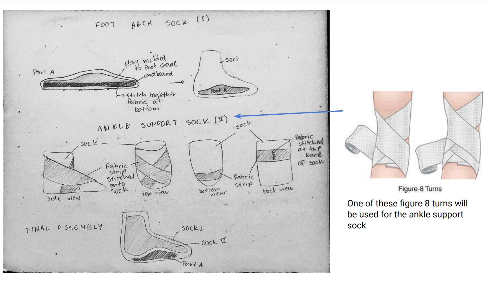
Test Plan
I plan to test three variables: the insole and muslin sock, the insole and t-shirt fabric sock, and a control (no prototype). To test, I will ask my co-designer to walk 10 feet on the ground while wearing the prototype. After the test, I will ask her to describe the fit and support of the prototype.
The data collected will be subjective qualitative data to determine whether the prototype fits and supports my co-designer’s foot. Because the prototype is tailored to fit Rishitha’s foot, the prototype can only be tested with her.

Test Results
- The insole sock provided support for the arch, but her feet still rolled inwards because there was not enough support on the sides of the insole, and the clay flattened to the pressure of my co-designer’s right foot.
- The muslin ankle sock did not fit my co-designer’s foot because the muslin was not adjustable and did not stretch when my co-designer tried to wear the sock.
- The t-shirt ankle sock fit my co-designer’s foot, but the fabric did not have the tension expected to provide adequate support to the ankle.
- When my co-designer tested the t-shirt ankle sock and the insole sock together, the multiple layers of socks made the product uncomfortably thick, and there was little support for the ankle.
Prototype Conclusions
- The ankle socks did not fit the co-designer, so the ankle sock needs to be redesigned.
- The insole provided some, but not enough, support, but it fit my co-designer so I can move onto the next iteration for the insole component using more durable materials.
- The combination of socks were extremely thick, so I need to redesign the sock system by either removing the layers of socks or by using thinner socks.
- I learned that even though I carefully measured my co-designer’s right foot, the lack of adjustability made it difficult to have the right amount of tension and stretch in the prototype. So, I will move onto the next iteration, but I will incorporate adjustable components, such as velcro straps, into the prototype’s design to provide a better fit and to provide more support.
- I found that the lack of elasticity in the t-shirt and muslin fabric from the ankle sock made the socks difficult to sew and wear, so I will purchase a more elastic material for the next iteration.
- Sewing the muslin and t-shirt fabric onto the socks was more difficult than I expected, so the stitches ended up being messy and loose. For the next iteration, I will try to research better methods of sewing material onto socks, and I will spend more time sewing so that the stitches are more uniform.
Final Prototype
Bill of Materials
- Denim fabric (30 cm x 1 m)
- 1 thin buckle- $5.99 - https://www.amazon.com/dp/B07RZS78QW/
- Adhesive velcro (1 m)* $12.95 - https://www.amazon.com/Non-Adhesive-Strips-Fabric-Fastener-Interlocking/dp/B07PWCH43T/
- Insole - $19.99 - https://www.amazon.com/RUN619-Zero-Drop-Shoe-Insoles/dp/B08R29CZ82
- Foam (10cm in x 5cm) - https://www.amazon.com/Adhesive-Stripping-Non-Slip-Furniture-Thickness/dp/B06ZY83SZJ/
- Spandex (1.5 m x 16 cm) - (https://www.amazon.com/Inches-White-Stretch-Elasticity-Elastic/dp/B071WMM7MS
* The latest prototype used adhesive velcro sewed onto the product, but sewing the velcro with the adhesive was very difficult, so using the sewing velcro is recommended
** Choose the insole with the user’s foot size, or a size higher if that size is not available
Tools
- Needle and thread
- Sewing machine (needs to have a zigzag stitch option; preferably with a larger needle that can sew denim and velcro)
- Scissors
- Measuring tape (longer than 1 yd)
- Marker or pencil to mark the fabric
- 2-5 Safety pins / fabric pins
- 1-2 sheets of paper (to write down measurements)
- X-Acto knife
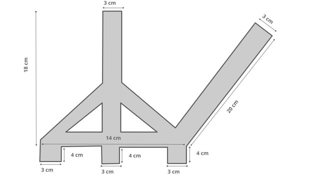
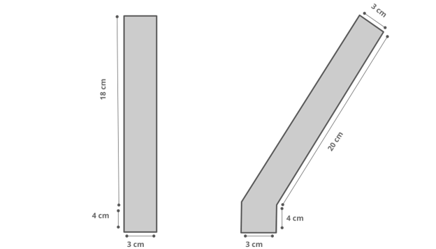
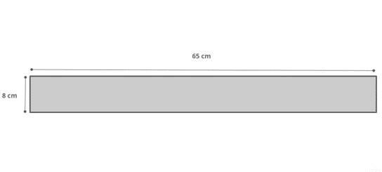
Build Instructions
Taking measurements
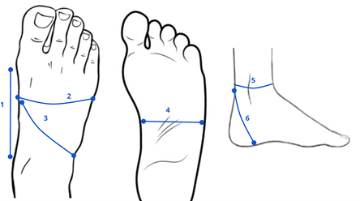
- For 1, measure the horizontal distance between the bottom of the ankle and the bone underneath the big toe.
- For 2, measure the circumference of the foot above the arch by placing one end of the measuring tape on one end of the foot arch and placing the other end of the tape on the other end of the foot arch
- For measurement 3, measure the curved distance from the left end of the foot arch to the right side of the ankle.
- For measurement 4, measure the horizontal distance between the left and right side of the arch of the foot.
- For 5, measure the circumference of the leg right above the heel, near the achilles.
- For 6, measure the curved distance from the area of the foot beneath the ankle and the achilles above the heel.
Fabric patterns and measurements
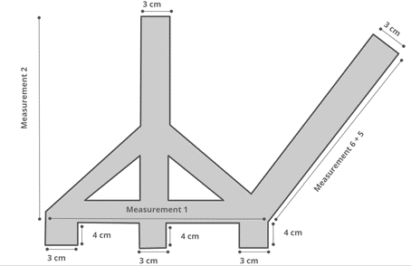
- The tall vertical strap in the design is the side support for the inside of the foot arch.
- The heel support strap, or the long angled strap at the right of the design, should be as long as the sum of measurement 6 and 5.
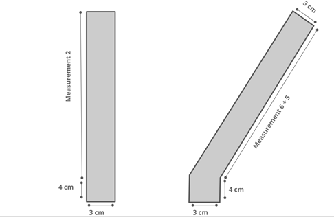
- These are fabric patterns for the side support on the outside of the foot and outer heel.
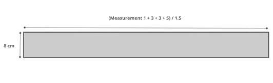
- This fabric pattern is for the ankle band made from spandex.
- B2. Because the ankle band wraps around the arch, ankles, and top of heel, the length of the strap is the sum of Measurements 1, double the length of measurement 3, and measurement 5. But the material is elastic, so it will stretch to be 1.5 times the size of the original length, so when measuring, the measurements should be divided by 1.5.
Cutting the fabrics
- Using the fabric designs and measurements as a reference, draw the design for the insole support on the denim.
- Cut out two copies of the fabric design using scissors. For the inner holes and cuts, use a box cutter or X-Acto knife.
- Align the two denim fabrics together back-to-back and secure with a pin
- Using the fabric design and measurements as a guide, cut out two copies of the design
- Align the two spandex fabrics together back-to-back and secure with a pin
Sewing denim and spandex
- Align the two pieces of denim fabric and start sewing around the perimeter of the fabric and around the holes using a running stitch (0.5 cm away from the edges; stitches of less than 0.5 cm length). Here is a link to what a running stitch should look like: https://www.thesprucecrafts.com/working-the-running-stitch-1177571.
- Align the two pieces of spandex fabric and start sewing around the perimeter of the fabric using a zigzag stitch. The stitches should be 0.5 cm away from the perimeter, and the stitches should be 0.5 cm in length. Here is a link to what a zigzag stitch would look like: https://www.wikihow.com/Do-a-Zigzag-Stitch-by-Hand
Adding the velcro and insole
- For 1, cut a 2 cm long piece of hook velcro and sew it in the middle of the horizontal strip of fabric towards the bottom of the piece.
- For 2 and 3, cut an 8 cm long piece of felt velcro.
- For 2, align the top of the velcro strap to the top of the vertical strap (side support strap) in the middle of the denim piece and sew the velcro onto the denim.
- For 3, align the velcro half the length of Measurement 5 from the top of the angled strap of denim for the heel and sew it onto the denim
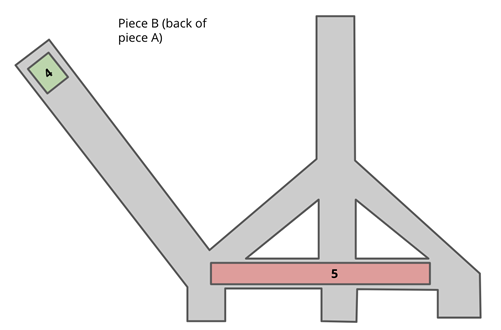
- For 4, cut a 2 cm strap of hook velcro and sew the velcro piece 1 cm away from the top of the angled strap (heel support strap).
- For 5, cut a strap of foam that is 3 cm less than Measurement 1 and attach it to the horizontal strap towards the bottom of the denim by hand sewing it onto the denim.
- The measurement for the foam is important to prevent the foam from interfering with the toes of the foot.
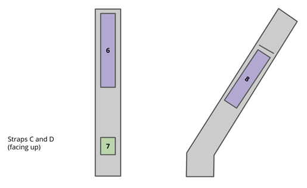
- For 6, cut a piece of felt velcro that is half the length of Measurement 1 and sew it 1 cm away from the top of Strap C.
- For 7, cut a 2 cm piece of hook velcro and sew it 4 cm away from the bottom of Strap C.
- For 8, cut an 8 cm long felt piece of velcro and sew it half the length of measurement 5 away from the top of strap D.
- Use a marker or pencil to draw a line above piece 8 as shown in the figure. There should be a 0.5 cm gap in between the line and edges of the strap. Use an X-Acto knife or box cutter to cut along the line. Sew along the perimeter of the line to prevent the denim from fraying.
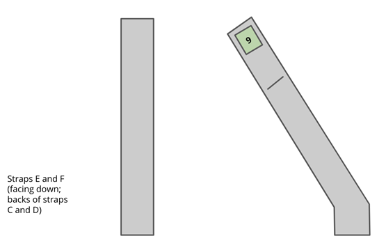
- For 9, cut a 2 cm long piece of hook velcro and sew it 1 cm away from the top of Strap F.
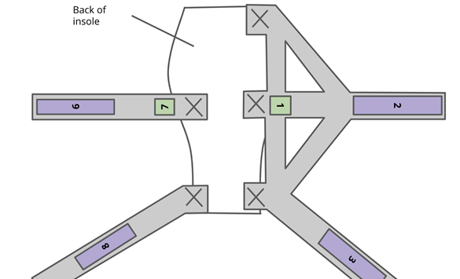
- As indicated by the X’s in the figure above, sew the flaps of the denim onto the bottom of the insole.
- After sewing, the pieces of denim shown in the figure (pieces A, C, and D should be facing up).
Inserting the buckle
- Flip the insole and denim over so that the denim pieces B, E, and F are facing up.
- Insert the vertical strap from piece B into the left hole of the buckle, and pull the strand to attach to the hook velcro on piece A.
- Insert the vertical strap from piece E into the right hole of the buckle, and pull the strand to attach to the hook velcro on piece C.
Ankle band
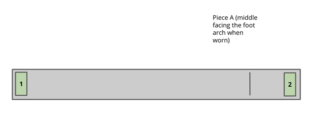
- For 1 and 2, cut 6 cm long pieces of hook velcro and attach 1 cm away from the left and right edges of the ankle band.
- Using a marker to pencil, draw a line as shown in the figure, which is one third of measurement 5 away from the right edge of the ankle band. The line should be 1 cm away from the top and bottom edges.
- Use an X-Acto knife or box cutter to cut along the line.
- Zig Zag sew along the perimeter of the line to prevent fraying.
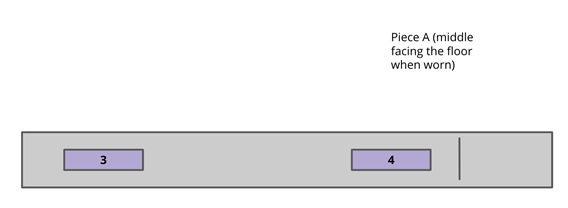
- For 3 and 4, cut two 8 cm felt pieces of velcro as seen in the figure.
- For velcro 3, sew the velcro so that the left edge is one third of Measurement 5 away from the left edge of the ankle band.
- For velcro 4, sew the velcro so that the right is 1 cm away from the cut line.
Prototype Pictures
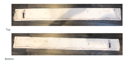
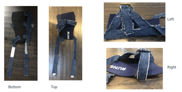
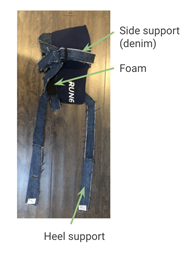
Final Exams!
My user will test the prototype with two variables: wearing flip flops and sneakers. This will help determine whether the prototype is compatible with multiple shoes.
The data collected will be qualitative and quantitative subjective feedback because it is difficult to measure qualities such as support and comfort.
To test this prototype, my co-designer will wear the prototype along with flip flops, and she will walk outside for 20 feet. After testing, I will ask my co-designer to describe her experience with the prototype and give it a score out of 10 for overall fit, support for the arch, support for the ankle, and compatibility with other shoes. This process will be repeated again with my co-designer using her sneakers instead.
To mimic the conditions of my co-designer’s walks, the prototype will be tested outside of my co-designer’s house and along the sidewalk.
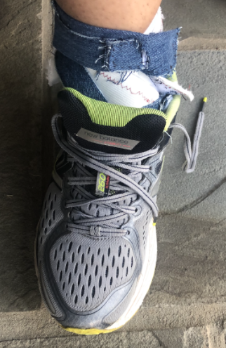
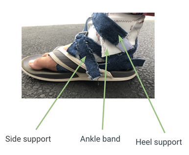
Results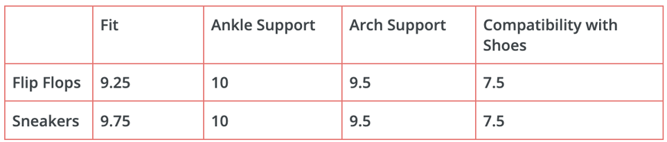
For the flip flops, the prototype fit well onto the co-designer’s foot, and the flip flops fit onto the co-designer’s foot when she was wearing the prototype. However, the straps on the flip flops and the layers of the prototype made it slightly uncomfortable because the fabric of the prototype tended to bunch up underneath the flip flop straps, which slightly dug into her foot.
For the sneakers, the prototype fit well onto the co-designer’s foot, and they stayed in place while she was walking. However, even after the opened the laces to fit the prototype, the overall fit was slightly tight because of all the layers of fabric.
The prototype provided enough ankle support when the co-designer wore the flip flops and sneakers
The foam and denim provided enough support on the sides of my co-designer’s foot, and the ankle brace helped provide support to the bottom of the arch as well.
My co-designer was able to wear both the flip flop and sneaker with ease. However, she needed to loosen the laces of her shoes so that the prototype would fit into the shoe, which took some extra time. Also, when my co-designer was walking in the flip flops, she found that she was unable to slide her foot to the front of the flip flops because of the layers in the prototype.
Future Improvements
From this iteration, I learned that taking the time to think about and find specific materials, such as the durable spandex elastic, thin buckle, and thinner insole, helps to build a better prototype. The design from the previous and current prototype did not drastically change, but the change in materials helped provide more support and comfort than before.
If I had more time, I would like to test how water and rain impact the prototype. Even though I tried to use materials that would be easily washed, I would like to test how the foam and insole react to water and rain.
Additionally, in the future I hope to resolve the fabric folds by either using a more elastic material that would fit better on my co-designer’s foot, or by adding more adjustable components to the design to help the product fit better.
Scalability
Because the product was developed based on my co-designer’s specific foot measurements, the exact product would be difficult to scale up. However, I think the design, if modified to match other people’s foot measurements, would be scalable to help others as well. Specifically, because this product provides comfort and support for the foot, it might help athletes recovering from a foot injury, and it might help others with overpronation. If the product was scaled up, it might be helpful to have variations based on people’s shoe sizes to account for the different measurements. Alternatively, if there are fewer people who are interested in the product, having a custom made product, similar to orthotics, might provide a better fit based on an individual’s foot shape.
Design Process Reflection
If I went through this process again, I would try to add more buffers in my schedule. There were some unexpected events and some materials took a few more days than expected to arrive, so adding gaps in my schedule would have helped me catch up in between the different stages of my project. I would also spend more time thinking about the tools I would use to build my prototype while buying materials. For example, I spent a lot of time sewing the denim and velcro by hand because I later realized that the needle on the sewing machine was too thin to work with velcro and denim. It would have been better if I had thought about how I would attach the components together by a different needle instead.